公開發售所得（官方關帳）
A 類含綠鞋
約935億美元
A 類合共 1,127,000,000 股、每股 83.00 美元，含承銷商全數行使額外 147,000,000 股。公司出售 1,103,351,354 股，售股股東 23,648,646 股；公司收到約 916 億美元，股東出售部分公司未收款。
效力：發售所得款項，不是市值。
2026年11月21日 · 星期六科技要聞
Anthropic 綠鞋關帳，上市第二日收 88.91 美元；研究員宣稱與 Claude 證明黎曼猜想，Lean 已通過編譯、比較器仍未完成；眾議院公布對華核準 87 萬 9,868 顆 AI 晶片；nginx 被揭五個高危漏洞。數字分源呈現，不合併。
人物：Elon Musk
Yahoo Finance 歷史報價：跌 8.26 美元，或 8.50%；開 89.86、高 92.56、低 83.05，成交 399,629,474 股 Yahoo Finance
開盤那天有人把公司寫成兩兆美元。第二個交易日，價格把氣氛還了回去。
據 Yahoo Finance 歷史報價表，Anthropic（ANT）週五收市 88.91 美元，跌 8.26 美元，或 8.50%；當日最低 83.05 美元，只比發行價 83 美元高出五美分，成交約四億股。週四它曾以 111.50 美元開盤，收市 97.17 美元。同一天，公司發布關帳聲明：A 類普通股首次公開發售合共 11.27 億股、每股 83.00 美元，包括承銷商全數行使額外 1.47 億股的選擇權；其中公司出售約 11.03 億股，售股股東出售約 2,365 萬股。發售所得款項總額約 935 億美元，公司收到約 916 億美元。同期，它向 AMD、Broadcom、Google、Micron、Microsoft、NVIDIA 與 TSMC Partners 私募出售約 3.13 億股 N 類普通股，同樣每股 83.00 美元，總代價約 260 億美元。官方把公開發售（含售股股東）與私募加總，寫成扣除費用前約 1,195 億美元。那是進帳，不是市值。把這筆現金和任何一個交易日的估值寫成同一個數字，就是在偷換單位。
第一性原理更乾脆。Yahoo Finance 早在十一月二日就根據當時修訂後的招股文件寫道：承諾支出約 8,950 億美元，幾乎全與運算和數據中心有關，約 700 億美元一年內到期；同一份文件把第三季營運虧損寫成 5.67 億美元。那不是今日才爆出的醜聞，是上市前已經印在紙上的約束。一千一百九十五億美元進帳是真的，收市 88.91 美元也是真的；電網、機櫃和晶片交期不會因為綠鞋被行使就自動縮短。你要買的是能落地的產能，不是開盤那天被折現到無限遠的氣氛。
公開發售所得（官方關帳）
A 類含綠鞋
約935億美元
A 類合共 1,127,000,000 股、每股 83.00 美元，含承銷商全數行使額外 147,000,000 股。公司出售 1,103,351,354 股，售股股東 23,648,646 股；公司收到約 916 億美元，股東出售部分公司未收款。
效力：發售所得款項，不是市值。
N 類私募（官方關帳）
AMD、Broadcom、Google、Micron、Microsoft、NVIDIA、TSMC Partners
約260億美元
N 類私募 313,253,007 股、每股 83.00 美元，總代價約 260 億美元。這是私募所得，不要與公開發售 935 億或收市價合併成估值。
效力：私募所得款項，不是市值。
公私募合計所得（官方）
扣除費用前
約1,195億美元
官方把首次公開發售（含售股股東）與私募加總為扣除費用前約 1,195 億美元。這是所得款項合計，不是市值，不可與週五收市 88.91 美元折算成同一筆估值。
效力：進帳合計，不是市值。
週五收市以 Yahoo Finance 歷史報價為準：88.91 美元，跌 8.26 美元（8.50%），開 89.86、高 92.56、低 83.05，成交 399,629,474 股。盤後 88.80 美元不是收市。MarketWatch／道瓊斯稿寫 88.30 美元、跌約 9%、週四估值 1.29 兆、週五 1.16 兆，與 88.91 不一致，禁止合併，亦不要用該稿推算今日市值。CNBC 盤前跌 12% 是盤前，不是收市。首日開盤逾兩兆、收市流通近 1.3 兆、完全稀釋 1.75 至 1.8 兆只作對照，不是今日主軸。約 8,950 億美元運算承諾是 Yahoo Finance 11 月 2 日報道的修訂招股文件數字，不是今日新披露。
來源：Anthropic 官方關帳；Yahoo Finance 歷史報價；CNBC 綠鞋稿；Yahoo Finance（11 月 2 日，修訂招股文件）。圖源：Brendan McDermid／Reuters（CNBC）。
人物：The Register
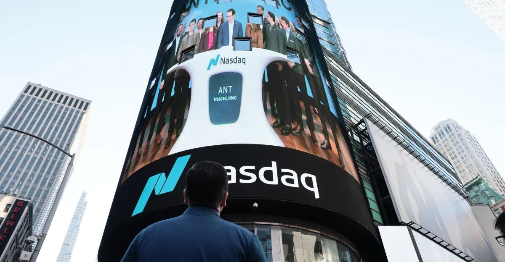
最省事的突破，總是趕在股票代碼還新鮮的時候出現。四頁速寫配上「AI 解決了百年難題」的標題，新聞稿比證明好讀得多。
據 The Verge，Anthropic 數學家 Levent Alpöge 宣稱與 Claude 合作發現了黎曼猜想的證明，並說方法可延伸至廣義黎曼猜想；證明以 Lean 形式化，放在他的網站。這是他個人宣布，不是公司新聞稿。該刊寫，Anthropic 截稿前未置評；Alpöge 稱曾把公布推遲到週四上市之後。Clay 千禧年獎要求發表後至少兩年、且獲數學社群普遍接受——在那之前，任何「已經解決」都只是標題寫法。The Verge 還寫，Anthropic 八月曾表示，不預期當時技術會通向證明黎曼猜想。
形式化並非無用。Scientific American 引麻省理工學院的 Andrew Sutherland 說，這份 Lean 證明已經編譯，並由 Lean kernel、只用三個標準公理獨立覆核：「Honestly the chance that anything is fishy here is approximately zero。」同一篇寫，研究人員仍在等待 comparator run，以確認程式沒有重定義題目符號，並能在多個獨立 kernel 上通過。Nature 引蒙特利爾大學的 Andrew Granville 批評那四頁寫法「garbled」，並質疑時點就在上市之後；Alpöge 則寫：「There is an obvious cynical view, to do with the timing, but it is false。」編譯通過很重要，它仍不是裁判報告，更不是支票。數學界要的是能讀的論證和過關的比較器，不是再多一則趕在週末前的歷史宣言。
來源：The Verge；Scientific American；Nature。圖源：同類相關圖，非該則新聞原圖。Getty Images（The Verge；Anthropic 上市畫面，非證明文件）。
人物：Chris Miller
算力不是雲端上的口號，是會過海關的矽，也是會佔地、吃電的機房。
據眾議院外交事務委員會十九日公開的 BIS 摘要，截至二零二六年五月十一日，商務部工業與安全局收到向中國公司出售 344 萬 4,160 顆受規管積體電路的申請，產品定義為 Nvidia H200 與 AMD MI325X；同一截止日，當局核準 87 萬 9,868 顆，涵蓋 21 份許可，其中阿里巴巴 75,000 顆、騰訊及其子公司 150,000 顆、百度 43,000 顆、比亞迪 4,000 顆。申請量與核準量不是同一欄：摘要把阿里巴巴及其子公司的申請量寫成 94 萬 8,950 顆，遠高於獲准的 75,000 顆。許可不是出貨單。Nvidia 對 CNBC 說，當時跟從商務部有效規則，並稱「Despite receiving some licenses, we have since stopped shipping H200s to China」；該公司又說，中國 H200 出貨佔截至七月那一季數據中心收入不足百分之一，中國與香港客戶約佔全部收入 9.5%。把「核準近八十八萬顆」寫成「已經運到」是偷換。
二十日，特朗普在記者會上另開一條邊境。據 The Verge 刊出的談話，他說不會允許美國公司在境外建數據中心，「If they do that, they can, but we're going to put a tremendous tax on them」；他又說自己還沒向幕僚提過。沒有稅率，沒有條文，課稅權仍在國會。CNBC 調查顯示，六成四登記選民反對住家十英里內出現 AI 數據中心。矽的出口許可與水泥的選址限制，是同一場產能戰爭的兩端：晶片要留在可追蹤的地方，機房要留在本國電網，電從哪來卻還沒說清楚。
申請量與核準量不是同一欄。許可不是出貨單。眾議院外交事務委員會公開的 BIS 2026-05-11 摘要。1260H 清單中的 948,950（阿里巴巴）等是申請量，不是核準。
「If they do that, they can, but we're going to put a tremendous tax on them。」特朗普二十日記者會，經 The Verge 刊出的談話。沒有稅率、機制或法律授權，不是已立法。
「Despite receiving some licenses, we have since stopped shipping H200s to China。」Nvidia 對 CNBC。核準不等於出貨。
申請量（BIS 2026-05-11 摘要）
3,444,160
向中國公司出售受規管積體電路（Nvidia H200 與 AMD MI325X）的申請顆數。不是核準量。
核準量（同一截止日）
879,868
涵蓋 21 份許可。核準不是出貨單；摘要沒有交代核準後的出貨狀態。
個別公司核準（同一摘要）
分列
阿里巴巴 75,000、騰訊及其子公司 150,000、百度 43,000、比亞迪 4,000。阿里巴巴申請量 948,950 不可寫成核準。
來源：眾議院外交事務委員會 ECRA 摘要 PDF；共和黨主席 Mast 新聞稿；CNBC；The Verge（特朗普稅）。圖源：Getty Images（CNBC；眾議員 Mast，非許可文件本身）。
人物：Linus Torvalds
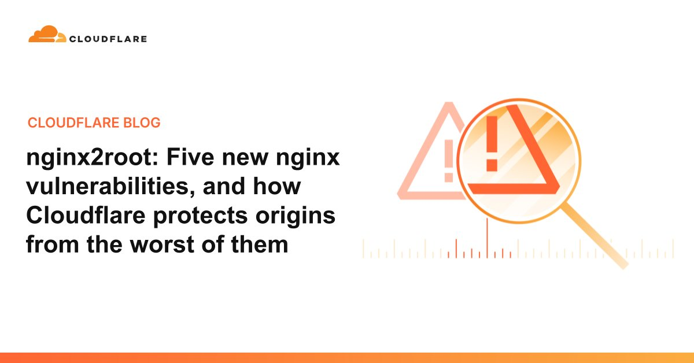
Talk is cheap. 修補版本號已經寫在公告上，還在比較誰的邊緣防護比較動聽的人，先回去重啟你的 worker。
據 Cloudflare 二十日網誌，F5 與 nginx.org 在十八日披露 nginx 的十個漏洞。其中五個由 Xint 研究團隊以 nginx2root 為名公布，屬記憶體損毀：未經認證的攻擊者可以讓 nginx worker 崩潰，或按該團隊的研究在伺服器上執行命令。Xint 還發現 Linux 核心 SCTP 發送路徑的釋放後使用問題，可把這個立足點提升為主機 root，包括從 Docker 容器裡面。最需要先處理的是 CVE-2026-123007：它只要求啟用 HTTP/2，自二零一五年的 1.9.5 起就在發行版裡。F5 評為 High 與 Critical。同一批發行版還修了 CVE-2026-118899 等另外五個問題，可在 TLS 1.3 讀取請求主體時把 worker 卡死。正確動作是更新到 nginx 1.30.7 或 1.31.9——或你發行版提供的對應修正——然後重啟。
規模也不允許再裝睡。Xint 在披露前的十一月十日用 Shodan 搜 product:nginx，找到 5,670 萬部主機；在報了版本的 1,194 萬部裡，98.9% 落在受影響範圍。Censys 到十九日仍數出約 880 萬個可能受影響、且啟用了 HTTP/2 的服務。版本字串不能證明每一台都可以被打穿，但這不是角落案例。開源被放在網際網路入口，並不自動等於有人在修。Talk is cheap。把套件更新推出去，比再寫一篇「我們的邊緣不受影響」有用。
來源：Cloudflare；Sysdig。圖源：Cloudflare（官方網誌配圖）。本報只寫高階影響與修補路徑。
平日稿，分類精選二十七則，含專題在所屬欄重出的短項。各欄底部為該欄熱度排行；同級熱度依內容包原序。圖源註寫在各卡內文區。
Anthropic 官方；並參 Yahoo Finance、CNBC
Anthropic 二十日宣布完成上市關帳：A 類合共 11.27 億股、每股 83 美元，含承銷商全數行使 1.47 億股綠鞋，發售所得約 935 億美元，公司實收約 916 億美元。另向 AMD、Google、Microsoft、Nvidia 等私募 N 類約 260 億美元，官方把兩筆加總為扣除費用前約 1,195 億美元，這是進帳不是市值。Yahoo Finance 報價表寫週五收 88.91 美元，跌 8.50%，最低 83.05 美元。詳見專題。
Brendan McDermid／Reuters（CNBC）
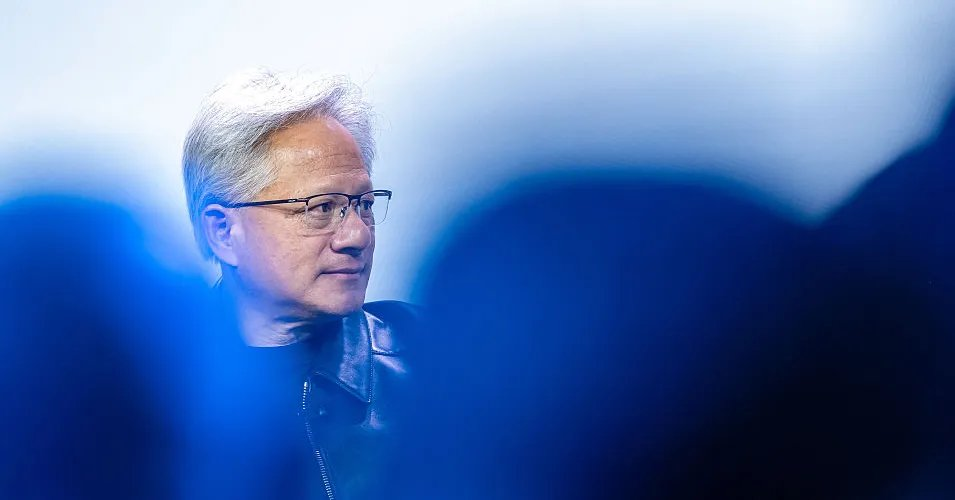
Reuters（獨家，消息來源）
Reuters 二十日引消息來源報道，美國證監會執法部門人員正審視 Nvidia 的潛在會計問題；SEC 拒評，Nvidia 截稿前未回覆。該社寫，未能確定調查何時展開、具體爭點為何，並強調調查本身不是違規證據。報道刊出後，LSEG 數據顯示 Nvidia 週五一度跌約 13%，此前已跌逾 6%。文中並提到地區收入改按客戶總部列報，以及循環融資安排引發的質疑，均須標明為報道而非已認定事實。
同類相關圖，非該則新聞原圖。Bloomberg／Getty Images（WIRED 配圖，同類相關圖，非該則 Reuters 原圖）
The Verge；並參 AP、CNBC、Axios
特朗普二十日在記者會稱，不會允許美國公司在境外興建數據中心，若仍要興建將課「tremendous tax」。The Verge 刊出談話紀錄，他說自己還沒向幕僚提過這件事。沒有稅率、機制或法律授權；Axios 指出聯邦課稅權在國會。CNBC 調查顯示，64% 登記選民反對住家十英里內有 AI 數據中心。這是口頭威脅，不是已立法。詳見 Miller 專題。
AFP／Getty Images（CNBC）
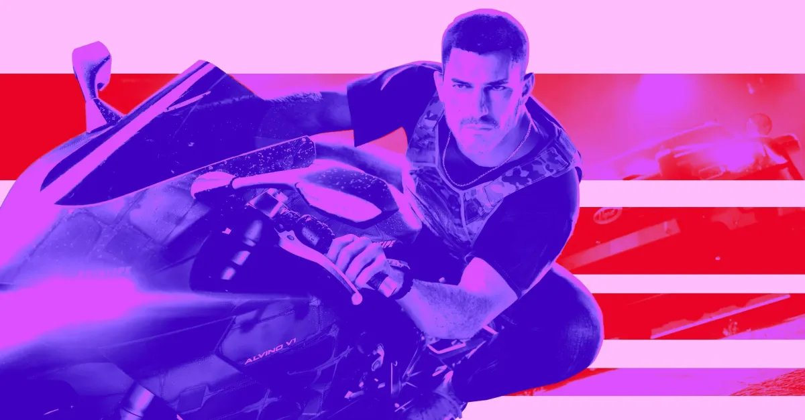
The Verge（轉述 Rockstar／Take-Two）
The Verge 轉述 Rockstar 宣布，Grand Theft Auto VI 首日零售銷售 37.9 億美元，並稱這是「任何媒介娛樂」的新紀錄；預購 3,250 萬套，遊戲於週四發行。本報嘗試打開 Take-Two 投資者關係直鏈得到 404，故數字以已打開的 The Verge 轉述為準。娛樂熱度高，但不作為今日 IT 專題主軸。
Cath Virginia／The Verge，Rockstar Games
WIRED（知情人士）
WIRED 二十日引兩名知情人士報道，在婚外關係與國安指控之外，最終讓 Nvidia 董事會採取行動的，是黃仁勳的「lack of candor」與「lying」，並稱相關問題橫跨二零二五年十月至近期。報道寫，董事會在《紐約時報》二零二五年十月有關 Megaspeed 的報道後曾詢問，當時他否認不當關係。代表黃仁勳的 John Fisher 對該刊稱他是自願辭職；Nvidia 拒評。這是董事會動機的新鉤，不是復職聲明重寫。
Bloomberg／Getty Images（WIRED）
題目據 Techmeme 轉載列表；《紐約時報》原頁本輪逾時未打開
Techmeme 二十日首頁大量轉載《紐約時報》題為 Threats, Insults, Settlements: How Jensen Huang Made Humiliation Routine 的調查報道。本報嘗試打開紐約時報頁面逾時，因此不轉述未經核對的具體指控或引語。此條只作熱度標記，不作事實認定。董事會動機的可核對新鉤見上方已打開的 WIRED 報道。
同類相關圖，非該則新聞原圖。Bloomberg／Getty Images（WIRED 配圖，同類相關圖，因紐約時報原頁未打開）
The Verge；並參 Scientific American、Nature
Anthropic 數學家 Levent Alpöge 宣稱與 Claude 合作證明黎曼猜想，並以 Lean 形式化；這是個人宣布，公司截稿前未置評。Scientific American 引 MIT 的 Andrew Sutherland 稱 Lean 證明已編譯，並由只用三個標準公理的 kernel 獨立覆核。比較器檢查仍在進行，以確認程式沒有重定義題目本身。Clay 千禧年獎須發表後至少兩年並獲普遍接受。不要寫成難題已被正式解決。詳見專題。
同類相關圖，非該則新聞原圖。Getty Images（The Verge；同類相關圖，上市畫面而非證明文件）
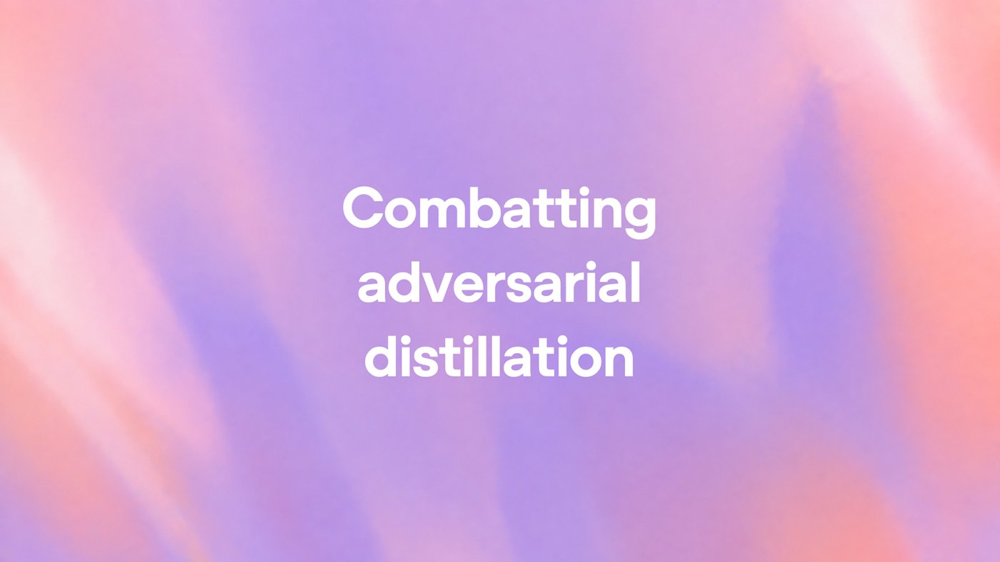
OpenAI 官方
OpenAI 二十日發表文章，說明如何偵測與阻斷未經授權的對抗性蒸餾，並加強保護模型的受保護推理（思維鏈）。官方寫，在針對 GPT-6.2 Astra 與 GPT-6.2 Sol 的內部自適應測試中，攻擊者從先前提示擷取受保護推理的平均成功率，由原防護下的 GPT-6 Astra 的 54.0%，降至更新防護後 GPT-6.2 Astra 的 0.2%。文章把蒸餾視為安全風險，尤其在網絡安全與生物等雙用途領域。數字以官方頁為準，屬內部評測。
OpenAI
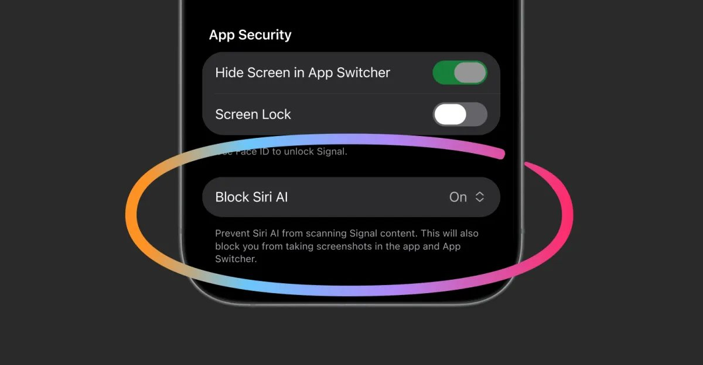
The Verge；並參 Signal 支援頁、The Register
Signal 在 Android 8.35.1 與 iPhone 8.37（需 iOS 27）加入畫面安全措施，限制截圖並阻止裝置上的 Gemini、Siri AI 等助理讀取畫面。官方支援頁寫，iPhone 預設開啟「Block Siri AI」；Android 則在助理首次嘗試讀取畫面時自動開啟。總裁 Meredith Whittaker 稱 AI 代理人「hostile to privacy」，並說截圖封鎖並不完整，因代理人仍可能經檔案系統取數；macOS 目前無法實作同等保護。用戶可在設定關閉，但會削弱隱私保證。
Signal（The Verge）
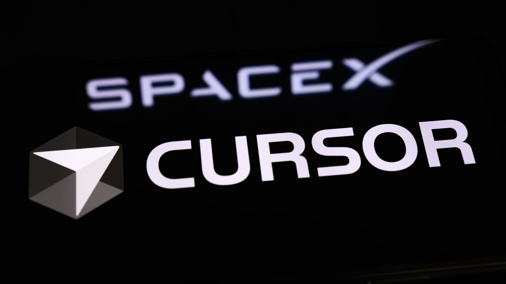
眾議院國土安全委員會；並參 CNBC
國土安全委員會主席 Garbarino 與中國事務特設委員會主席 Moolenaar 二十日發布聯合調查報告，審視美國公司採用中國開源權重模型的風險，並提出十二項政策建議，包括禁止聯邦系統與聯邦合約使用、從高風險關鍵基礎設施移除。調查對象包括 Airbnb、Anysphere／Cursor 與 DoorDash。CNBC 寫，Cursor 的 Composer 2 建於 Moonshot 的 Kimi K2.5，公司正考慮逐步停用，屬評估而非已完成切換；SpaceX 於八月完成收購 Cursor。報告中的判斷是委員會表述。
同類相關圖，非該則新聞原圖。Getty Images（CNBC；資料照，非聽證會現場）
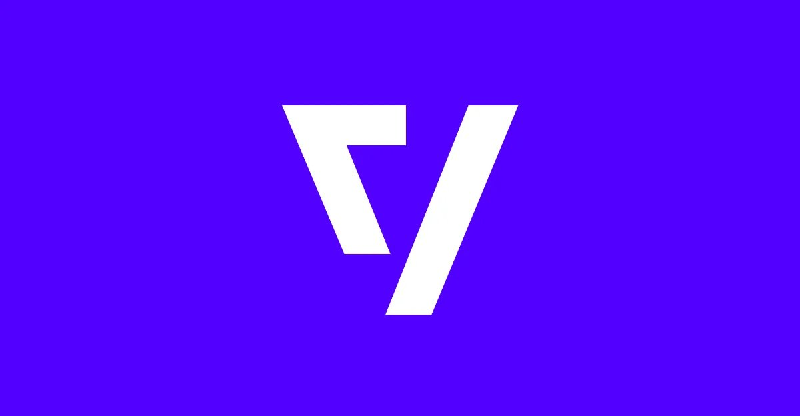
The Verge
The Verge 二十日報道，Google 的 Gemini 應用程式開始支援產生 GIF，使用 Gemini Omni 1.2 Flash，循環長度約三秒。功能向美國、加拿大、英國、日本、韓國、澳洲、德國與法國用戶推出。該刊頁面較短，細節以已打開段落為準。這是產品增量，不是新的 computer use 功能重寫。
同類相關圖，非該則新聞原圖。The Verge（頁面占位圖，同類相關圖，非功能示範）
Cloudflare；並參 Sysdig
Cloudflare 寫，F5 與 nginx.org 十八日披露十個 nginx 漏洞，其中五個以 nginx2root 為名公布，屬記憶體損毀，未經認證攻擊者可令 worker 崩潰，或按 Xint 研究執行命令；另有 Linux 核心 SCTP 問題可提升至主機 root，包括從容器內。修補版本為 1.30.7 或 1.31.9 並重啟。CVE-2026-123007 自 1.9.5 起影響啟用 HTTP/2 的安裝。披露前 Shodan 錄得 5,670 萬部 nginx 主機，有版本字串者中 98.9% 落在受影響範圍。詳見專題。本報不提供利用步驟。
Cloudflare
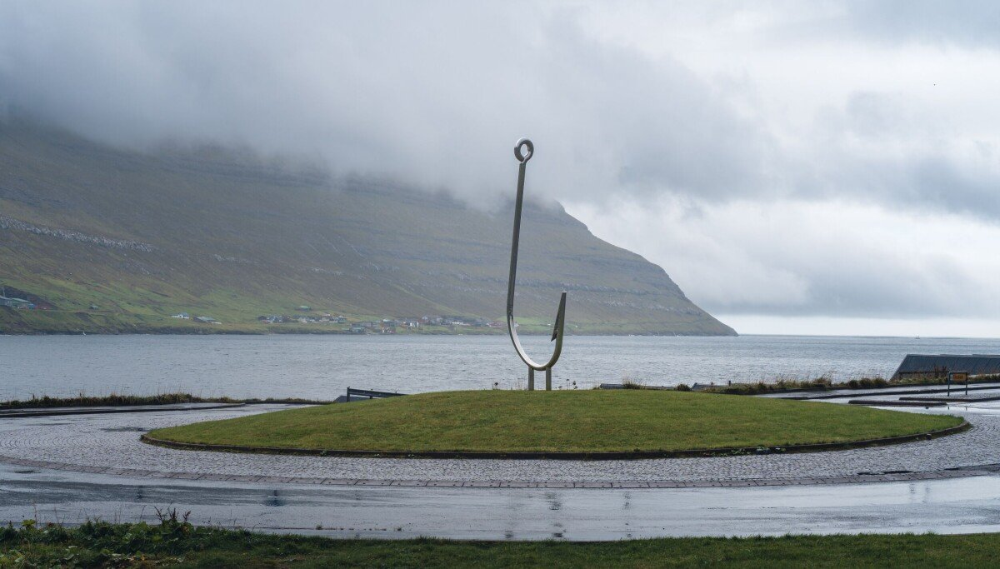
The Register
Visa、Mastercard 與 JPMorgan Chase 向 The Register 確認，正調查可能涉及客戶資料的第三方事件。SOCRadar 掃描勒索組織 n0n 公布的 14 個 Visa／Mastercard 檔案，稱未見卡號、有效期、CVV、密碼、出生日期或住址，但有手機號碼、BIN 前綴與訂房、機票等紀錄，可用於偽冒客服或銀行的釣魚。公布檔約佔該組織聲稱竊取量的 0.4%。時點與 Wiz／Mandiant／Sentra 披露的 Qubole 活動相近，檔案本身未點名供應商，不能寫成已確認。
The Register
The Register
The Register 報道，PHP 8.6 於週四按年度時程發布。核心團隊與 PHP Foundation 同時釋出 8.5.13、8.4.28、8.3.37、8.2.36 與 8.6，一口氣修補七個嚴重遠端程式執行漏洞。8.6 並採納 Jörg Sowa 的建議，把 session 的 Strict Mode、HttpOnly 與 SameSite 改為更安全的預設值，以降低工作階段劫持與跨站請求偽造風險。這不能取代更新舊分支，也不等於修掉所有新的 CVE。
The Register
Signal 支援頁；並參 The Verge
Signal 官方支援頁列出畫面安全的具體行為：iPhone 預設開啟，並提供「關閉十分鐘」以便臨時截圖；Android 可在設定中預先開啟，或在助理首次嘗試讀取時自動開啟，若在提示中關閉則九十日後會再開。功能只影響截圖與裝置上掃描，不改變訊息加密本身。Whittaker 強調，作業系統層的 AI 代理人若無可供開發者使用的限制工具，會削弱應用層隱私。詳見 a3。
Signal（The Verge）
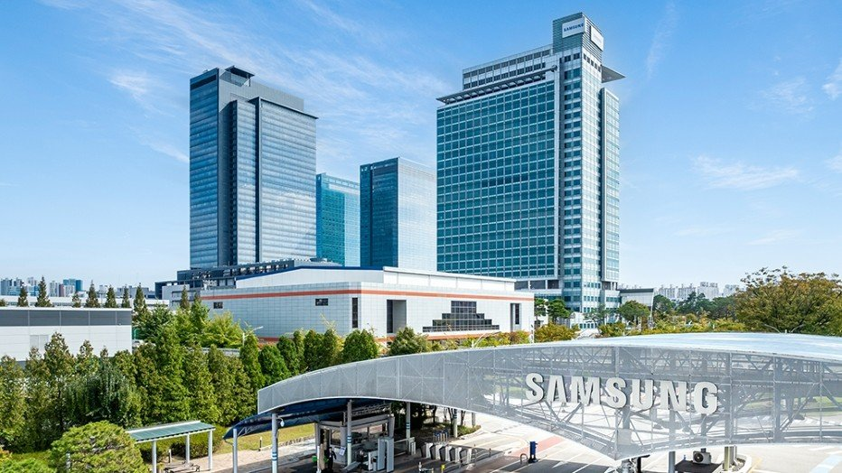
Samsung 官方新聞室
三星電子二十日宣布新一輪人事：Hwang Sang Joon 升任社長並成為記憶體業務負責人，此前主管包括 DRAM 與 HBM 在內的記憶體開發；Sangyeun Cho 升任社長掌管 System LSI；Jong Myeong Lee 升任社長並出任 DS 部門技術長。Won-Joon Choi 出任 MX 流動業務負責人。副會長 Young Hyun Jun 繼續掌管 DS，TM Roh 繼續掌管 DX，兩人仍任聯席執行長。官方把此輪調整與半導體競爭力掛鉤。
Samsung
The Verge
Google 為 Gemini 應用程式加入約三秒循環的 GIF 產生，模型為 Gemini Omni 1.2 Flash，先在美、加、英、日、韓、澳、德、法推出。詳見 a5。這是消費功能增量，不是 Mac computer use 的延續報道。
同類相關圖，非該則新聞原圖。The Verge（占位圖，同類相關圖）
眾議院外交事務委員會摘要；並參 CNBC
委員會公開的 BIS 五月十一日摘要顯示，當局收到向中國公司出售 344 萬 4,160 顆受規管積體電路的申請，並核準 87 萬 9,868 顆、涵蓋 21 份許可，產品為 Nvidia H200 與 AMD MI325X。核準明細包括阿里巴巴 75,000、騰訊及其子公司 150,000、百度 43,000、比亞迪 4,000；申請量不可與核準量對調。Nvidia 對 CNBC 稱其後已停止向中國出貨 H200，並稱中國 H200 出貨佔截至七月那一季數據中心收入不足 1%。核準不等於出貨。詳見專題。
Getty Images（CNBC）
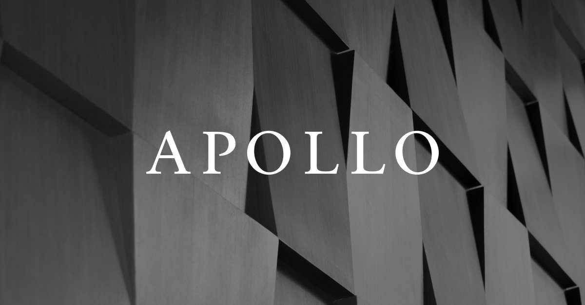
Apollo 官方
Apollo 與高盛二十日宣布，成功定價約 440 億美元優先及次級票據，為 SpaceX 地面運算建置購買 GPU 及相關設備，晶片為 NVIDIA Vera Rubin，稱是迄今最大規模 GPU 融資，並因需求超額認購而擴大。租賃期預計在二零二七年上半年設備交付後開始。錨定承諾包括 BlackRock、Goldman Sachs Asset Management 與 KKR 顧問帳戶。這是官方關帳數字，取代昨日 Semafor 約 400 億美元的獨家口徑；不要與《金融時報》所寫的約 430 億合併。
Apollo
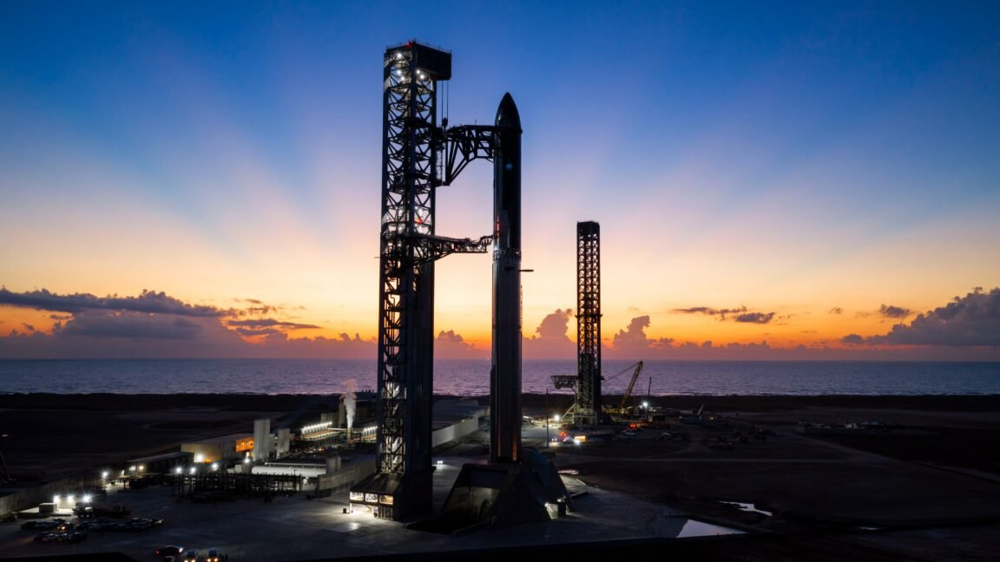
Ars Technica（轉載 Financial Times）
Ars 轉載《金融時報》報道，為 SpaceX 以先進 AI 晶片作抵押的債務融資提供資金的貸款人，曾試圖禁止把這些抵押品用於軌道數據中心，理由是違約後難以收回與轉售。該稿寫 SpaceX 表示相關晶片計劃用於地面，並註明不確定該限制是否寫入最終文件；總額寫成約 430 億美元，與 Apollo 官方的約 440 億美元不要合併。知情人士、Apollo 與高盛拒評，SpaceX 未回覆置評請求。
同類相關圖，非該則新聞原圖。SpaceX（Ars／FT 配圖，Starship 資料照）
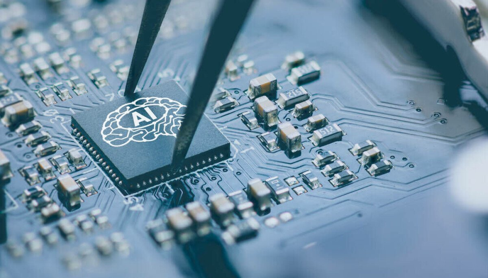
The Register
The Register 轉述全球電子協會報告《The PCB Squeeze》，稱 AI 伺服器電路板可達 40 至 60 層或以上，需求規模超出供應鏈原有設計，汽車、醫療與國防訂單被擠佔，有意義紓緩不太可能早於二零二八年中。北美數據顯示，二零二六年首九個月 PCB 訂單按年升 56.1%，出貨只升 13.3%。報告稱九月層壓板漲價 30%，部分電子級玻璃布漲 300%，銅價一年升 37%。超過九成電路板在亞洲生產。Gartner 分析師 Cori Masters 稱上游材料限制已持續數季。
The Register
Samsung 官方新聞室
三星二十日宣布 Hwang Sang Joon 升任社長並成為記憶體業務負責人，官方預期他將加強 AI 時代記憶體產品競爭力；System LSI 與 DS 技術長同步調整，副會長 Jun 不再兼任記憶體一線主管、專注 DS。詳見 c2。這是人事與產能競爭的硬體消息，不是新的製程節點宣布。
Samsung
Axios；並參 The Verge、CNBC
Axios 寫，特朗普二十日提出阻止或重罰美國公司在境外建數據中心，但未說明會否尋求國會批准，而聯邦課稅權在國會。The Verge 記錄他自稱尚未告知幕僚。Axios 引 Ballotpedia：截至二零二六年十一月，13 州 53 項相關選票措施中，有 52 項傾向限制開發。CNBC All-America 調查則顯示 64% 登記選民反對住家十英里內出現 AI 數據中心，13% 支持。口頭政策與選民抗拒同時存在。詳見 Miller 專題。
Yuri Gripas／CNP／Bloomberg via Getty Images（Axios）
眾議院國土安全委員會
聯合報告建議在國土安全部已排除 DeepSeek 的基礎上，禁止聯邦資訊系統與聯邦合約履行使用「中國開發的 AI 模型」，並從關鍵基礎設施的高風險功能中移除，且不得用聯邦網絡安全補助金購買。主席前言稱，聯邦調查發現大型中國開發商用代理網絡與欺詐帳戶擷取美國前沿模型輸出——這是委員會表述，不是本報獨立認定。詳見 a4。
同類相關圖，非該則新聞原圖。Getty Images（CNBC；同類相關圖）
Cloudflare
開源 nginx 的修補版本已公布：1.30.7 或 1.31.9，或各發行版對應修正，之後必須重啟。五個 nginx2root 漏洞與另五個問題（包括 TLS 1.3 無限迴圈）同批修復。版本字串不能證明每台主機都可被利用，因為發行版會回溯修補，但曝光面很大。詳見 Torvalds 專題。不要轉載利用細節。
Cloudflare
The Register
PHP 8.6 採納核心開發者 Jörg Sowa 的提案，不再接受伺服器未曾建立的未初始化 session ID，預設為 session cookie 加上 HttpOnly，並在跨站 POST、子請求與 iframe 中停止發送 session cookie。The Register 寫，這些改動有助降低工作階段劫持與 CSRF，但不能單獨阻止遠端程式執行。同日舊分支亦釋出修補七個嚴重漏洞的版本。詳見 s3。
The Register
OpenAI 官方
OpenAI 把對抗性蒸餾防禦寫成與生物、網絡安全防護更對齊的分層措施，包括對抗測試、模型訓練、分類器與 API 層保護，並調查有協調的能力擷取活動。官方強調受保護推理可能包含最終答案沒有的資訊，因此成為蒸餾目標。內部數字見 a2。這是封閉模型的防護公告，不是開源權重發布。
OpenAI
每日 IT 報 · 2026年11月21日 · 星期六
資料視覺專題版。選稿窗約 2026-11-20 07:45 HKT 至 2026-11-21 07:45 HKT。數字分源呈現，不合併。